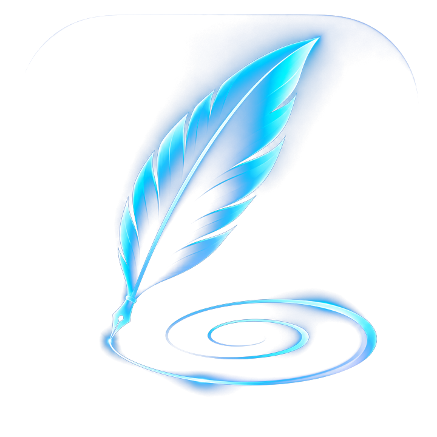

Plume des soins.
Chaque note compte.
Propulsé par  Au Cœur de Marie
Au Cœur de Marie
Bienvenue
Je suis HAVA, ton assistante de notes. Commençons par identifier le résident.
♙Infirmière auxiliaireInfirmière auxiliaire
Votre espace de dictée
1. Identifier le résident
2. Dicter la note
Prête à dicter
3. Votre note
Le jaune indique uniquement une répétition ou une anomalie reconnue. Il ne remplace pas la relecture.
📖 Consulter le lexique médical québécois
Abréviations reconnues pour faciliter la relecture. Certaines peuvent être ambiguës ou à éviter dans une ordonnance.
4. Utiliser la note
Courriel : responsablesoins@demeurecdm.com